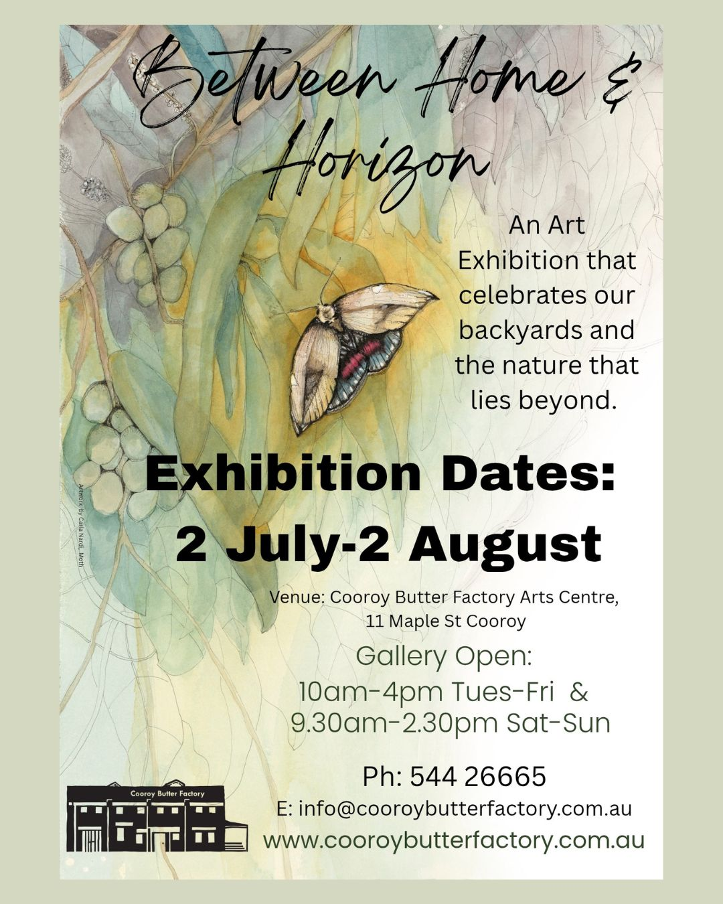

This painting was inspired by an outdoor shower at my parent’s house in Lake Macdonald. Hidden among the trees, it became a small ritual—a place between the comfort of home and the openness of nature. Showering in the warm sunlight felt both ordinary and magical, almost like a form of meditation. A quiet moment of pause, suspended somewhere between memory, home, and the horizon.
This painting will be at Cooroy butter factory gallery for a month. Please check the schedule below and visit. Thanks!
